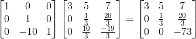

P矩阵全称为Permutation Matrix，也就是置换矩阵。置换矩阵左乘矩阵A，是对A进行行序变换，右乘矩阵A，是对A进行列序变换：


那PA代表的是一个通过转换行序后能够通过消元法变成一个上三角矩阵的矩阵。这句话有点拗口，但是有做过矩阵消元的人都知道，有时比如第一行首位就为0，这样一开始就无法消元，所以得通过转换行序，将首位有数值的行给提到第一行上来后再进行消元动作，所以PA代表的就是将行序确定好能够从上往下消元的矩阵。
那接下来，L代表的是Lower Triangular Matrix(下三角矩阵)，就是对角线上方都为0的矩阵；U代表Upper Triangular Matrix(上三角矩阵)，就是对角线下方都为0的矩阵。那么为什么等式能够成立？
回到之前我们一直所讲的消元，矩阵A通过左乘各类变换矩阵后，最终能够得到一个上三角的矩阵，这样消元就结束了，接下去就可以直接求解了。下面讲个例子。
已知矩阵A：

其能通过一定的消元动作变成一个上三角矩阵：

那么，我们可以用变换矩阵来等价消元动作：



我们将所有变换矩阵左乘起来：
不难看出其实矩阵L就是变换矩阵的逆，最后成功分解了矩阵A=LU（这例子中矩阵A不用进行P矩阵置换）：
至此，本章结束，下一章简要了解下置换矩阵？转置矩阵？对称矩阵？